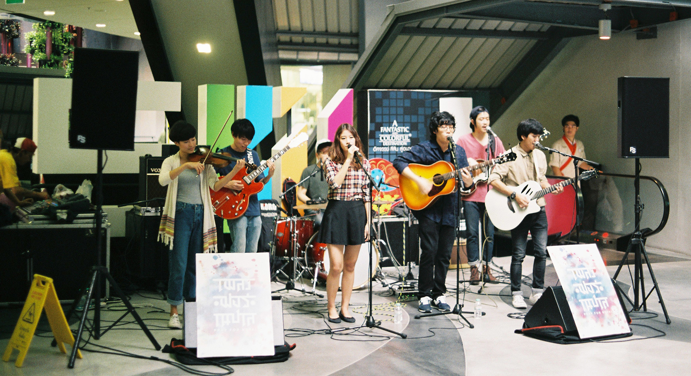
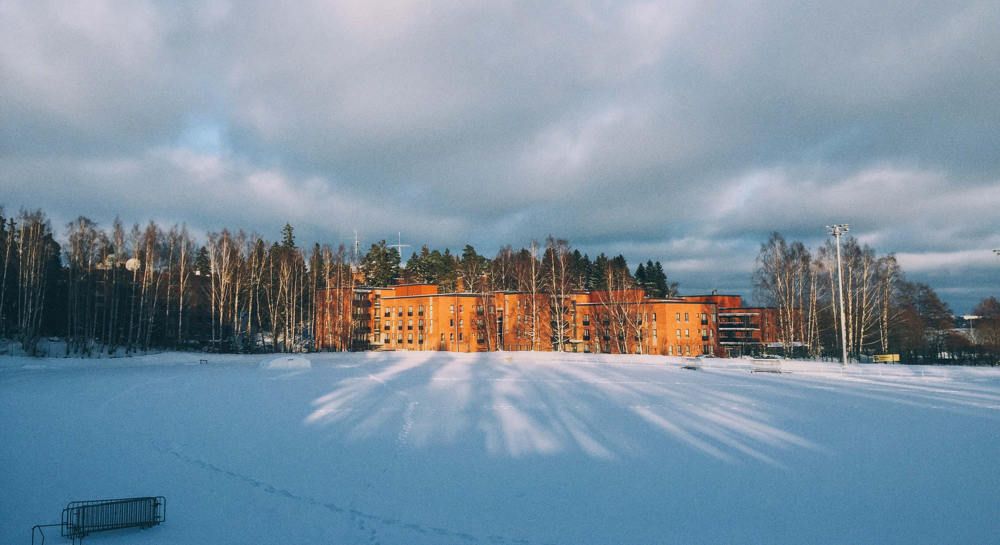
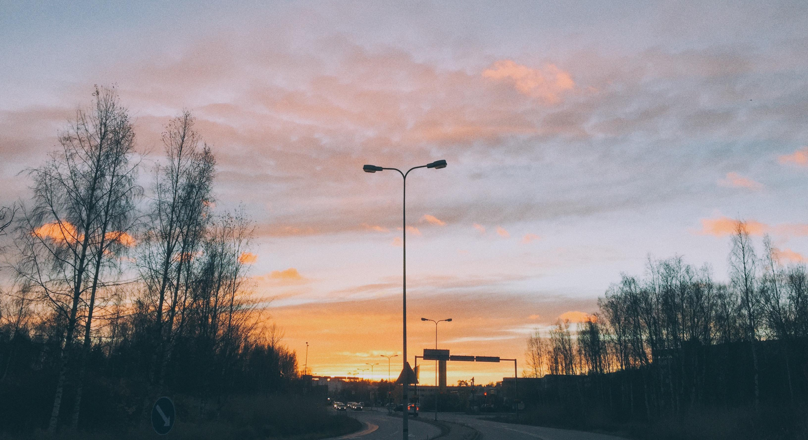
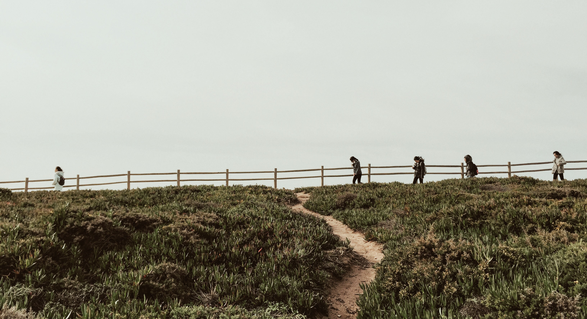

Gallery
photograghy
I fell in love with photography when I was a junior student in the unversity. At that time, I had a course called architecture photography. Then I found myself really enjoy it and tried to make photography become one of my favorite interests in my life.
Here are some photographs taken by myself. Photography is kind of good habit which can help me find more details and beauties of the life and that brings me a lot of joys.






